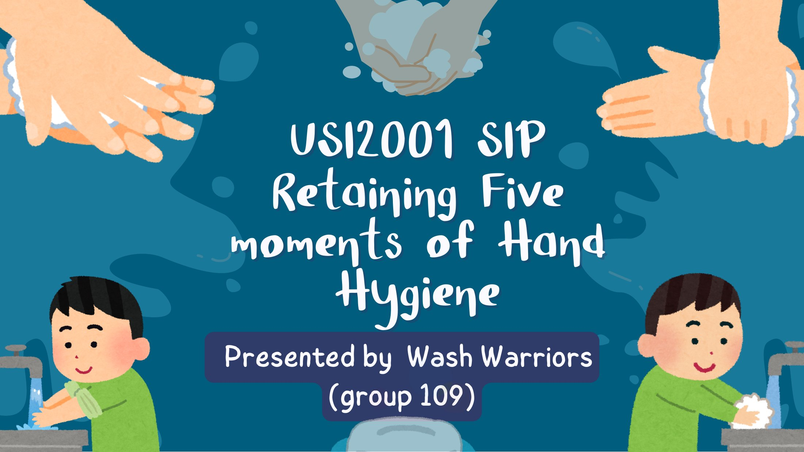
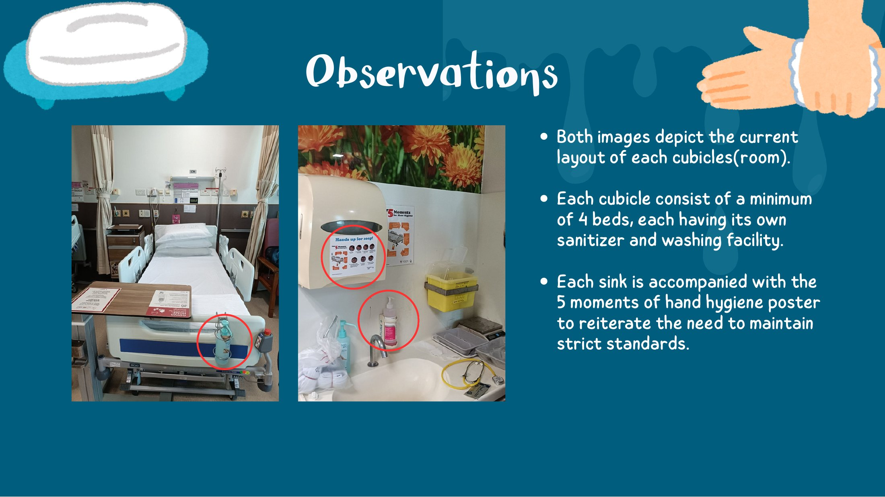
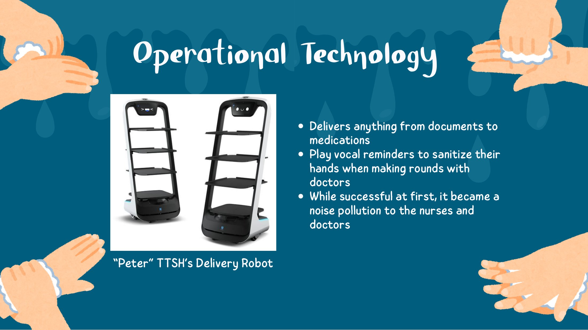
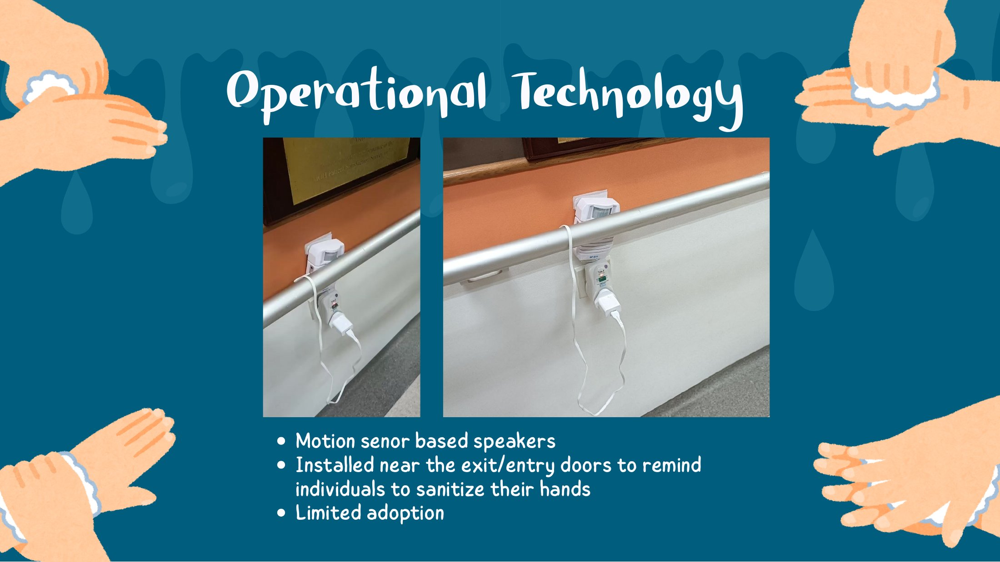
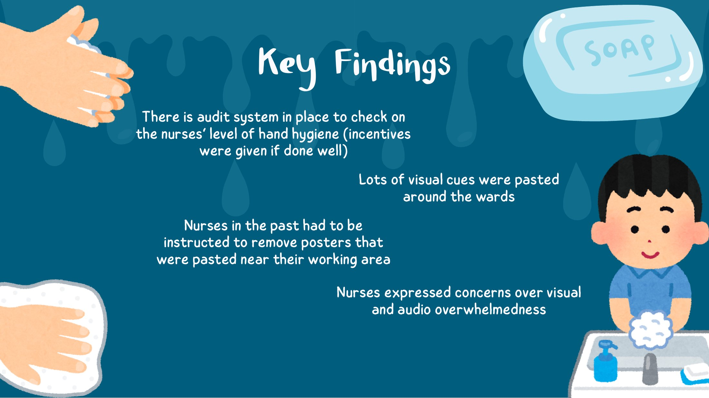
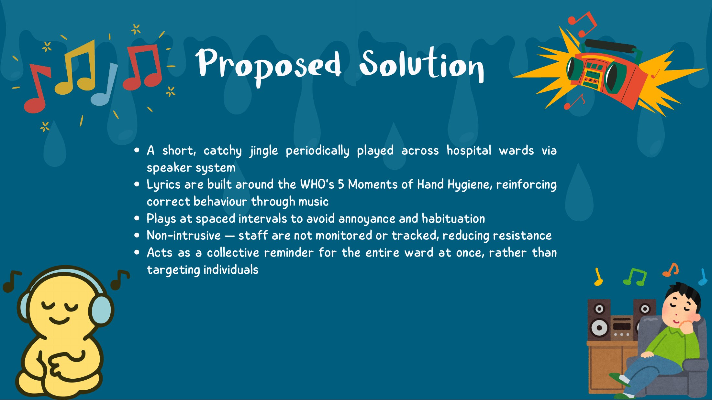
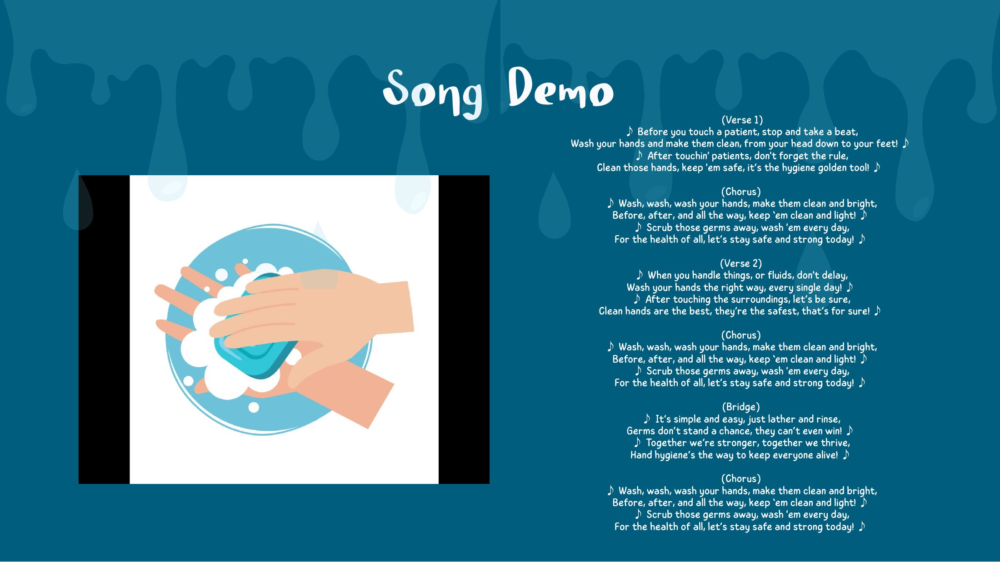

Hand Hygiene Awareness Jingle
- Team
- 5 ("Wash Warriors", group 109)
- My part
- Research and the video
- Partner
- Tan Tock Seng Hospital (site visit)
- Output
- A proposed ward jingle, presented with lyrics and a video demo

The problem
How might we improve and sustain the five moments of hand hygiene for healthcare workers across healthcare facilities?
The World Health Organization defines five moments when healthcare workers must clean their hands:
- Before touching a patient
- Before a clean or aseptic procedure, such as inserting an IV
- After risk of exposure to body fluids
- After touching a patient
- After touching a patient's surroundings
Hospitals already know these rules. The challenge is keeping staff following them every shift without wearing them down.
What we explored
We brainstormed three directions: a hand hygiene jingle, more visual cues such as floor markings and signage, and motion-sensor reminders. Before choosing, we visited Tan Tock Seng Hospital to see what was already in place.
What the site visit showed




The hospital was not short of reminders. It had too many of them.
| Existing reminder | What happened |
|---|---|
| Posters at every sink and bed | Nurses had previously been asked to remove posters near their work areas |
| Robot with spoken reminders | Worked at first, then became noise pollution for nurses and doctors |
| Motion-sensor speakers | Installed near entrances, but saw limited adoption |
| Audits with incentives | Already in place to check nurses' hand hygiene |
The key finding: staff were experiencing visual and audio overload. Another reminder of the same kind would make the problem worse.
Our proposal

A short, catchy jingle played periodically across hospital wards through the speaker system, with lyrics built around the five moments. It was designed specifically against the problems we saw:
-
Spaced out
Plays at intervals, so it doesn't become another constant noise.
-
Not personal
No one is monitored or tracked, which reduces resistance.
-
Whole ward at once
A shared reminder rather than one aimed at individuals.
-
Easy to remember
The five moments set to music instead of another poster.
The jingle

Verse 1
Before you touch a patient, stop and take a beat,
Wash your hands and make them clean, from your head down to your feet!
After touchin' patients, don't forget the rule,
Clean those hands, keep 'em safe, it's the hygiene golden tool!
Chorus
Wash, wash, wash your hands, make them clean and bright,
Before, after, and all the way, keep 'em clean and light!
Scrub those germs away, wash 'em every day,
For the health of all, let's stay safe and strong today!
Verse 2
When you handle things, or fluids, don't delay,
Wash your hands the right way, every single day!
After touching the surroundings, let's be sure,
Clean hands are the best, they're the safest, that's for sure!
What I learned
- Visiting the site changed our understanding of the problem. We expected to find too few reminders and found too many; the real issue was fatigue, not awareness.
- A good solution can be defined by what it avoids. Our design principles came straight from what had already failed at the hospital.
- Users' reactions to an intervention matter as much as whether it works. The robot was effective until staff found it annoying, which made it unsustainable.